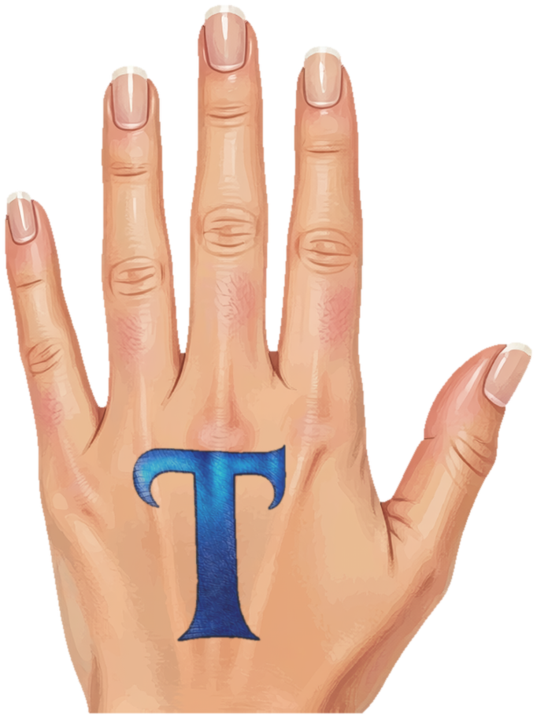
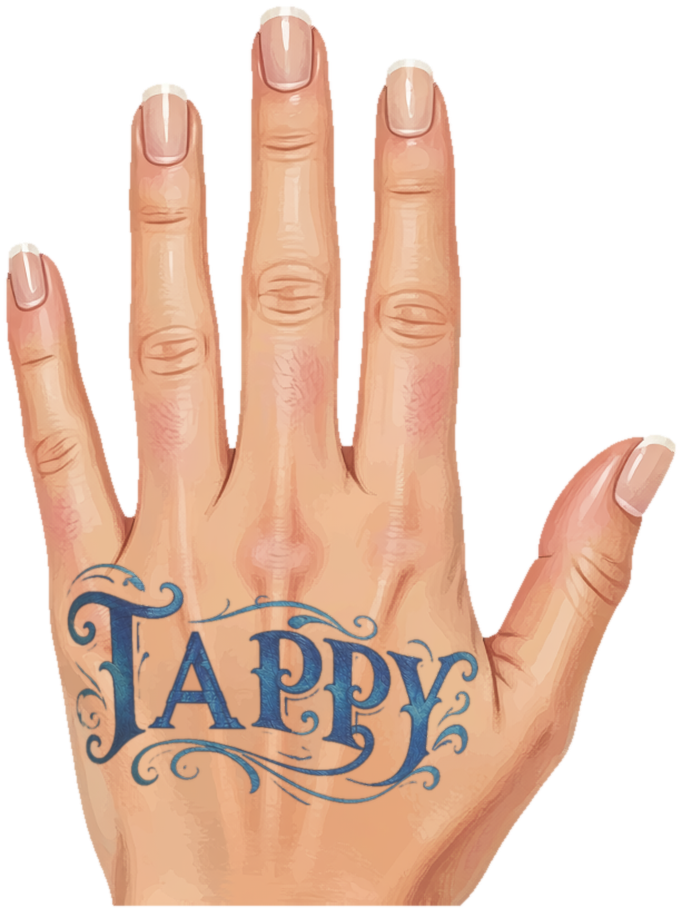
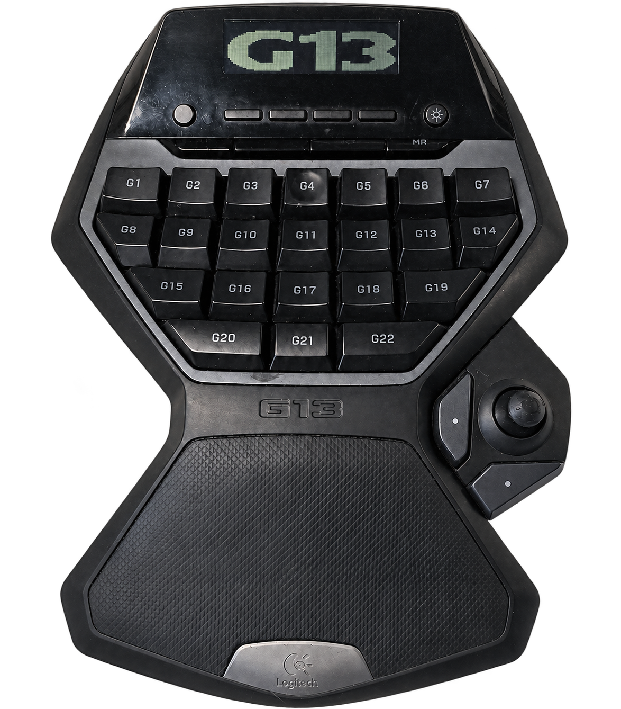
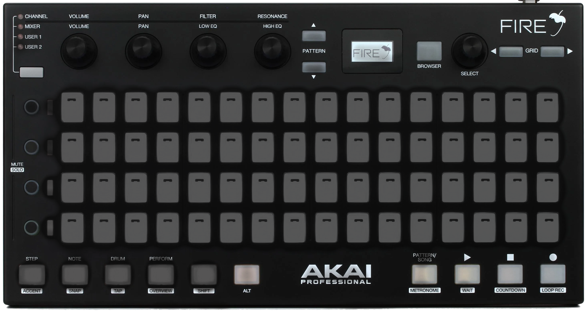
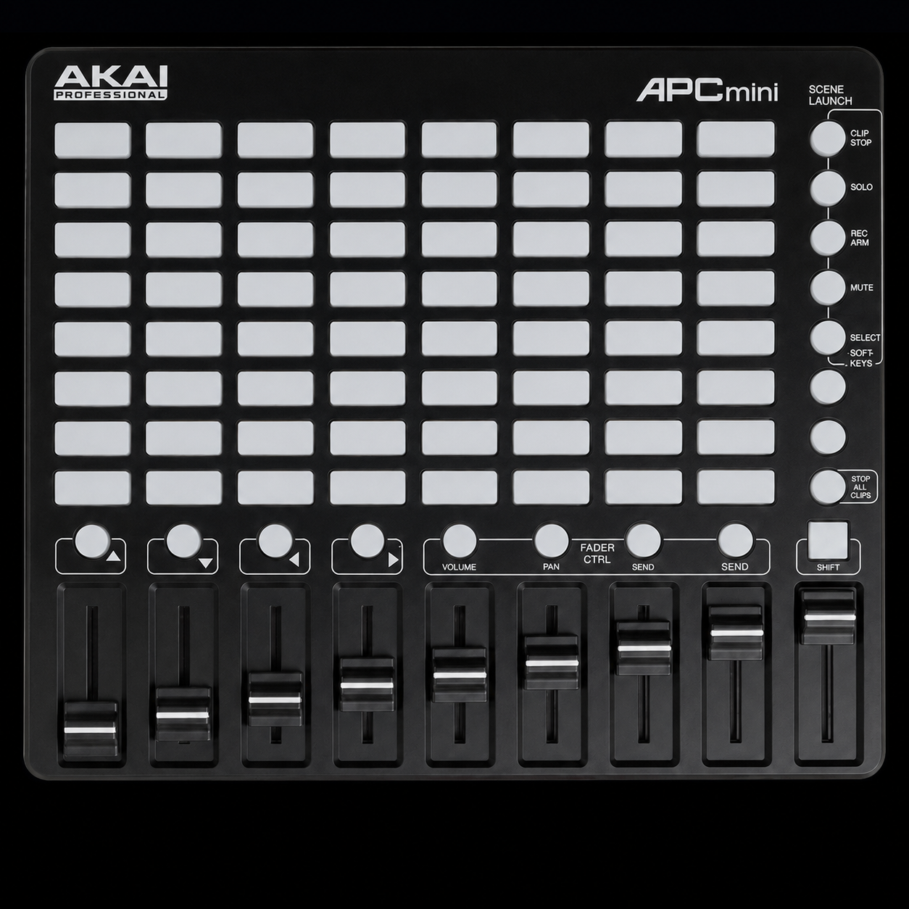
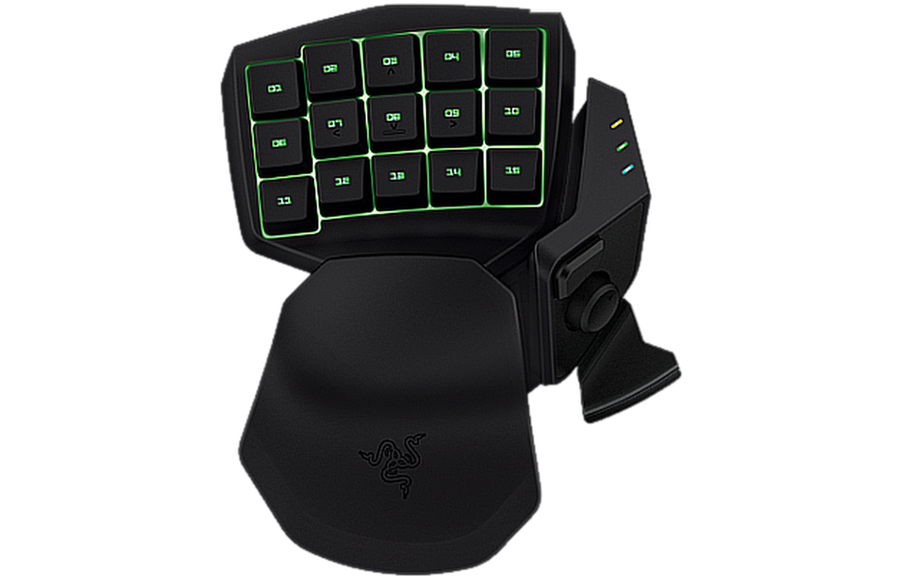
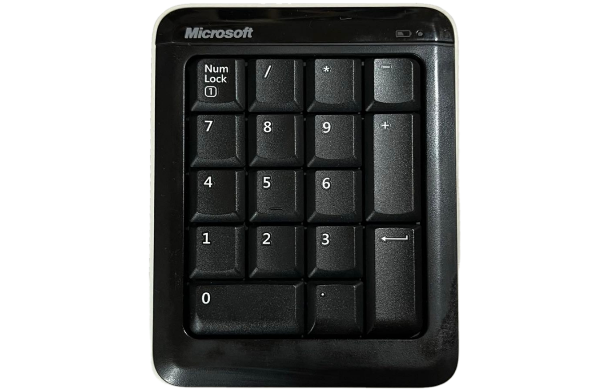

01 / SHORTCUTS
A shortcut to your shortcuts.
Assign keyboard combinations, type a text snippet, or move and click the mouse. Turn the things you do all day into a single, familiar button.
Keyboard · Text · Mouse
Tappyby TerkWerXSmall keys. Big possibilities.
That spare keypad has more to give. Turn its buttons into shortcuts, creative tools, and multi-step macros. Make a little space for a lot more control.

Good hardware deserves another act
Your favorite commands don’t have to live behind menus or finger-twisting shortcuts. Give them a home on the keys in front of you. One action or a whole sequence—you decide what happens next.
Assign keyboard combinations, type a text snippet, or move and click the mouse. Turn the things you do all day into a single, familiar button.
Keyboard · Text · MouseBuild multi-step assignments with explicit delays. Reopen and edit what you’ve made, rearrange steps, and keep the work you’ve already put in.
Build · Edit · RepeatSend MIDI from a keypad, or use a supported MIDI controller to trigger keyboard shortcuts and macros. Add OSC messages to connect with software that listens.
MIDI input & output · OSC / UDPArrange physically shaped controls, move and resize whole groups, then lock your layout. Fit it all into view or fill the workspace and pan around. Your positions and sizes stay saved.
Freeform · Bulk resize · Lock · Fit / FillKeep a supported controller’s photo beside the button grid. A selected key or physical press highlights its place. Lighting options depend on the exact model.
Photo locator · Model-aware lightingRehearsal Mode suppresses Tappy’s assignment output while you explore. An emergency stop is close at hand. Your setup stays local, without automatic telemetry.
Source input may still pass throughKeep controllers in their own tabs. Use a numpad to change another device’s assignment bank, cycle forward and back, or toggle two banks. On supported models, the bank lights can follow.
Multiple devices · Cross-controller banksGive a two-button press its own purpose—or combine up to eight controls on one device. Release the group to run the largest matching combination, without firing the smaller assignments first.
Separate combo tiles · Run-once macrosPaint LED animation frames or play waves, chases, and other effects. Let supported grids share one moving canvas. The Fire’s OLED adds live status, a Tappy logo, or a scrolling TerkWerX wordmark.
Shared animations · Model-specific display modesA little hands-on, right here
Pick a sample workflow, then click a key. See how a controller can become your editing desk, studio companion, or everyday helper.
Put the selected text or item on the clipboard.
Ctrl + C
G1 selectedOn-screen highlight, not individual RGB lighting.
Illustrative assignments, not a live app or included preset pack. This page sends no keys, MIDI, or OSC. Shortcut behavior depends on your application.
A place for your spare hardware
A keypad. A spare keyboard. A MIDI controller. Tappy brings different kinds of input into one assignment workflow—with honest, model-specific support.

A CONTROL SURFACE WITH A SPARK
99 catalogued controls, a measured photo locator, RGB pad colors, and compact encoder controls. Show status or branding on the OLED and run animations across multiple connected grids.
Pad lighting, OLED modes, and multi-device animation have attended hardware evidence. Not every indicator LED is implemented; encoder-motion photo feedback still needs its final physical check.
THE KEYPAD WITH ANOTHER CHAPTER
39 controls in the layout, a matching photo locator, and whole-device RGB color. Physical input and an assigned keyboard output have passed attended checks.
One shared lighting zone—not per-key RGB. Broader hardware and recovery testing continues.

FROM THE STUDIO TO YOUR WORKFLOW
Pads, buttons, and fader-direction controls can trigger assignments. The original model’s supported pad-light palette is off, green, red, and amber.
Exact-model support, with initial hardware checks. This is not a compatibility claim for the MK2 or other APC models.

EIGHT BANKS. YOUR CHOICE.
Keep independent assignments in eight banks and follow the active bank with the three physical indicator lights. Change banks from another confirmed controller—or a button combination.
Original model with factory key reports. The indicators are fixed-color bank lights, not individually addressable RGB keys.

SMALL PAD. PERSONAL COMMAND DESK.
Model-specific layouts and photo feedback for the Microsoft Bluetooth Number Pad X821504-001 and Targus PAUK10U. Keep multiple devices separate while their buttons work together.
Num Lock and special keys depend on the reports the hardware sends. A printed key does not guarantee a separate assignable signal.
The next great
shortcut might
be in your
spare drawer.
NO ONE-SIZE-FITS-ALL PROMISE
Tappy’s device-aware input path is designed for keyboard-style devices. Identify the exact controller before assigning its controls.
Detection isn’t the same as full compatibility. Dongles, firmware, and device models still need individual validation.
A setup that makes sense
Keep the button grid clear, the controller photo beside it, and your favorite actions right where your hands expect them.
Take the preview for a spinChoose the intended device. Press and release a physical control, then confirm it. Tappy doesn’t automatically pick a keyboard for you.
Build an assignment, arrange the on-screen buttons, and rehearse. For supported models, the photo helps you connect each square to its physical control.
Keep your assignments and arrangement together. Come back to edit a sequence or change a layout as your workflow evolves.
Two ways to give hardware a new life
Tippy puts your feet to work. Tappy puts your keys to work. Two TerkWerX projects, one shared idea: make the hardware you already have more useful, more personal, and a lot more fun.
Step over to TippyA few things worth knowing
Keyboard combinations, text, delays, mouse actions, program or document launches, PowerShell, MIDI short messages, and OSC messages can be combined in the assignment editor. Supported MIDI input controls use the same assignment system as keyboard-style controllers.
The receiving app still determines what a shortcut, MIDI message, or OSC address means.
Not in the current pass-through mode. Tappy can identify the selected device, but its original input may still reach other applications. Rehearsal Mode suppresses Tappy’s generated assignment output; it does not block the source keyboard’s native input.
Per-device blocking and driver certification are separate work in progress. This site does not promise a signed blocking driver or anti-cheat compatibility.
That’s not a claim we can make. Tappy has a generic keyboard-style input path and MIDI input support, plus model-specific layouts and feedback for selected controllers. A connected device being detected does not prove that every control, dongle, or lighting feature works.
Development checks now include the Fire, original APC MINI, G13, original Tartarus, Targus PAUK10U, and Microsoft Bluetooth Number Pad. Tested capabilities differ by model; full hardware verification is still underway.
Only where the exact controller and its implemented lighting protocol support it. Fire pads support RGB colors. The G13 has one shared RGB zone, not individually addressable keys. The original APC MINI uses off, green, red, and amber for supported lights. Original Tartarus bank indicators use their fixed colors.
A photo highlight is on-screen feedback. It does not mean a physical button has an LED or can change color. Shared animations respect each participating model’s actual palette.
The current OLED modes are Off, Live status, Tappy logo, and Scrolling TerkWerX, with a welcome sequence when the controller is confirmed. These modes have been exercised on real hardware.
A general custom-screen editor, arbitrary application data, and DAW track or transport information are not currently promised. Display modes are distinct from the hand-painted pad-animation editor.
No. It is a small, illustrative website demo. Selecting a key only changes the text and highlight on this page. It doesn’t access controllers, send keyboard commands, run programs, or transmit MIDI or OSC.
The workflow examples are ideas to explore—not a claim that a preset pack is included in the app.
Tappy is in early development. There is no public packaged release yet, and no public software license has been granted. Follow the GitHub project for development notes, licensing information, and release status.
The next chapter is taking shape
We’re building Tappy one useful improvement at a time. Follow the work, explore the project, and help shape what these keys can become.